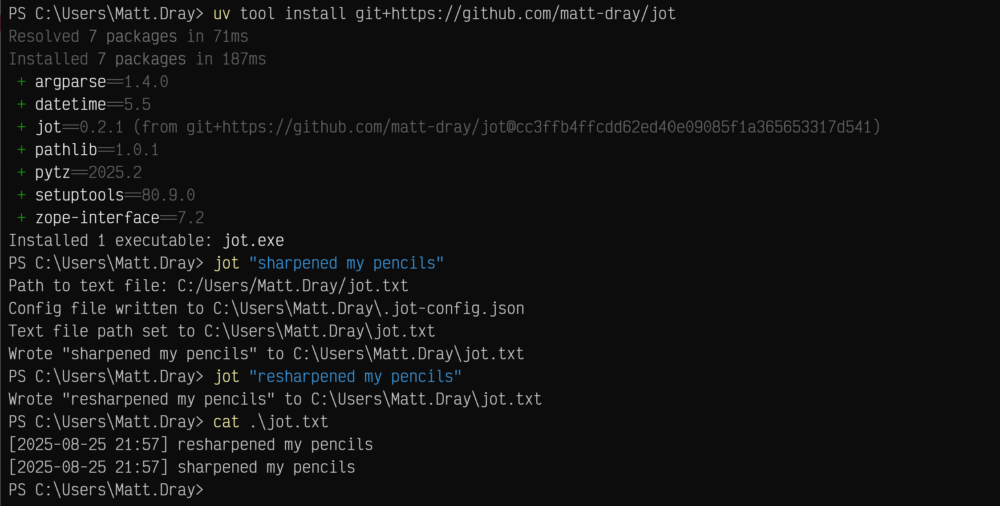
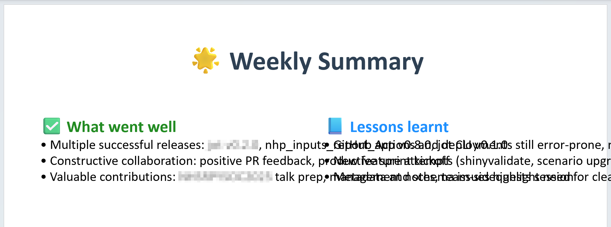

[project]
name = "2025-08-25-jot"
version = "0.1.0"
requires-python = ">=3.12"
dependencies = []
tl;dr
I’ve started a minimal opinionated Python command-line tool to help me remember stuff. It’s called jot.
Jot or not
This tool is for me1, but if you want to install it, I recommend you install uv first. Then run uv tool install git+https://github.com/matt-dray/jot from a terminal to install jot (currently v0.2.1) from GitHub.
Open a terminal and write your first jotting like jot "sharpened my pencils". When prompted, enter a text file path where your jottings will be saved. This path will be stored in a .jot-config.json file in your home folder. Each jot call will prepend your your text file with the jotting and a timestamp.
Keep that terminal window open and write new jottings throughout the day, week, month, year.
That’s it.
Forget me jot
The development of jot is a story in three neurologically-themed parts:
- Goldfish brain.
- Robot brain.
- Human brain.
1. Goldfish brain
I forget stuff. Work stuff in particular. The fogginess stops me from properly recognising my efforts and reflecting on what I’ve learnt.
Recently I’ve reacquainted myself with weeknotes; appreciated Jeff Huang’s neverending text file; and resonated with Chris Albon’s advice to avoid ‘invisible work’ and to try a lightweight logging system.
So I figured I’d write a Python-powered platform-independent command-line tool to jot notes into an immortal text file2. I’m developing my Python skills after all.
2. Robot brain
As a ‘data scientist’ on ‘the cutting edge’, I wondered if I should try ‘vibe coding’ on this non-critical personal project3.
After some low-effort LLM prompts, I got a thing that did the thing. I figured its existence was the main goal and I could iterate later with more ‘artisanal’ approaches (i.e. engaging my monkey brain and paws).
I released this as v0.1.0 and started using it. It was just what I wanted (i.e. not very much).
So why then did I rewrite the whole thing from scratch?
3. Human brain
Inevitably (obviously) the vibes didn’t teach me anything4. I knew this would happen, but not how much I’d actually miss the failing and learning that comes with doing a new thing.
So I rewrote it myself using some old-fashioned Duck-Duck-Going, some snotty Stackoverflow comments and, shudder, some documentation.
I learnt things about file handling with with, pathlib for easing the pain of filepaths, and argparse for interpreting inputs on the command line.
Is the resulting v0.2.0 (human-powered edition) better than v0.1.0? Well, it’s ‘as good’ in the sense it achieves the same outcome. My code is more brittle and my limits are more evident. But I’m okay with that.
Human heart
There’s not much of a lesson here, apart from the fact I like tinkering and would prefer to do things that way.
I’ll develop jot a bit more with the aid of ‘traditional’ techniques. The interface will remain minimal, but I’d like to add some really basic options to fetch jottings from the past day/week/month or that match a keyword. Add some ideas if you like.
And actually, I think LLMs do have a place in this story, just not in the development stage. Before team standups I can consult an LLM to summarise the past week from my jottings. Before appraisals I can summarise the past year.
One particular LLM asked if I’d like some Python code to generate a P*werPoint slide to summarise my week. Wow!

Very cool. Judgement day is inevitable.
Environment
Session info
Footnotes
Though Adriana has been using it too, in a slightly different way to me.↩︎
You’re thinking ‘yes, but now you have a meta problem: will you actually remember to write in it?’ I don’t think this is a problem for me, personally. A terminal window is always in front of my face and hard to miss. I seem capable of building habits for other positive things.↩︎
This blog is a non-critical personal project too, but I have not and will not write posts with anything other than my brain and typo-addled fingers. I’ve written before about my distaste for LLMs as slop manufacturers. I have fewer qualms about using it for boilerplate, as a code helper, and for-fun personal projects. But I’m still not 100% happy with it in general from an ethical standpoint and for the existential dread it can bring.↩︎
Yes, I could have asked the LLM to walk me through the code and teach me. Would I have remembered any of it? Unlikely. More fool me.↩︎
Reuse
CC BY-NC-SA 4.0